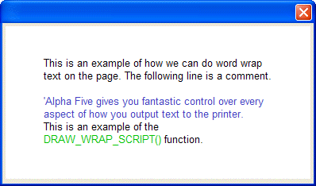

DRAW_WRAP_SCRIPT()
Syntax
DRAW_WRAP_SCRIPT( Text as C, Xpos as N, Ypos as N, Width as N, Height as N [, Offset as N ] )
Argument | Description |
Text | The text to write. |
Xpos | The horizontal coordinate of the upper left corner of the bounding box. |
Ypos | The vertical coordinate of the upper left corner of the bounding box. |
Width | The width of the bounding box. |
Height | The height of the bounding box. |
Offset | The position of the text relative to the left margin. Must be greater than or equal to 1. |
Description
DRAW_WRAP_SCRIPT() draws word wrapped text onto a bitmap. It also applies standard Code Editor colorization to text elements such as Comments.
Limitations
Used in the Code section of UI_BITMAP_DRAW(), UI_SCREEN_DRAW(), and UI_PRINTER_DRAW().
Example
Refer to DRAW_WRAP_TEXT()for more examples.

ui_bitmap_create("test", 4, 2) word_wrap_text = <<%a% This is an example of how we can do word wrap text on the page. The following line is a comment. 'Alpha Anywhere gives you fantastic control over every aspect of how you output text to the printer. This is an example of the DRAW_WRAP_SCRIPT() function. %a% ui_bitmap_draw("test",<<%code% inner_Rect(0, 0, 4, 2) set_font("arial,10", "black", "white") offset=draw_wrap_script(word_wrap_text, .5, .4, 3, 1.5, 1) %code%) ui_dlg_box("","{image=test}") |
See Also
Bitmap and Graphic Functions, DRAW_WRAP_TEXT()